SFC 패드 기본 조작
- 방향키
- 이동 / 선택
- A
- 확인 · 대화 · 조사 · 문 통과
- B
- 취소 · 메뉴 닫기
- X
- 아이템 · 상태 메뉴
- Start
- 타이틀에서 시작
길이 막힐 때, 다음 대화가 궁금할 때.
친구들과 함께 한 화씩 모험을 이어 가세요.

1~8화 본문을 검색합니다. 숨긴 내용은 자동으로 펼치지 않습니다.
현재 상황을 고르면 해당 화로 이동합니다.
전투를 반복하기보다 대화·조사·이벤트로 길을 여는 모험입니다.
새 ‘삐삐’에게 말을 걸고 ‘저장했어!’까지 확인하세요. 보스 앞, 긴 심부름 뒤, 아이를 데리고 이동하기 전후에 저장하면 편합니다.
다시 시작할 때는 타이틀의 이어하기에서 저장한 진행을 고르세요.
발 위치를 같은 줄에 맞춘 뒤 상대를 바라보고 A를 누르세요. 문은 중앙에서 A. 세라비의 식탁은 오른쪽 빈 의자 쪽 틈에서 왼쪽을 바라보면 대화가 닿습니다. 동료가 좁은 길을 막으면 넓게 돌아가거나 밀 방향을 길게 눌러 보세요.
필드에서는 B+방향키로 빠르게 이동할 수 있습니다. 전투에서는 A로 공격·결정, B로 방어·취소, X로 마법, Y로 아이템을 선택합니다. 화면의 버튼 안내를 함께 확인하세요.
통이나 서랍처럼 조사할 수 있는 물건에서 회복품을 찾아두세요. 전투 전에는 회복 대상과 남은 음식을 먼저 확인하면 좋습니다.
참고: JCshutup 조작 안내 · SFC 플레이 리뷰
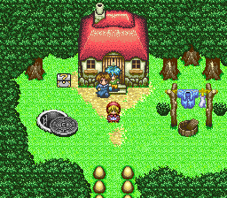
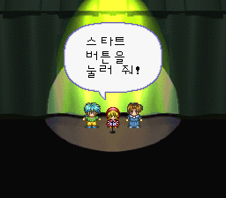
1화의 첫 단계부터 시작합니다. ‘다음 단계’로 조금씩 펼치거나 필요한 화만 골라 읽어 보세요.
맞는 결과가 없습니다. 단어를 짧게 바꾸거나 ‘지우기’를 눌러 전체를 확인하세요.
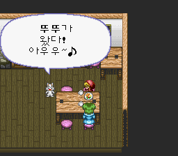
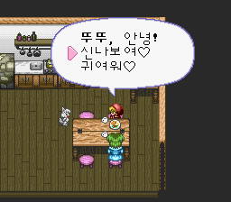
다음 단계를 누르면 이어서 읽을 수 있습니다. 앞서 펼친 내용은 그대로 남습니다.
맨홀로 들어가 바닥의 발자국 표시를 밟아 워프하세요. 이동한 곳에서 보물상자를 조사하고 프린세스 메달리온 설명을 듣습니다. 비문을 읽는 선택지도 확인할 수 있습니다.
밖의 동상 받침대 상자에서 박카쌩과 부활명수를 챙기세요. 같은 장소를 다시 조사하는 대화도 놓치지 마세요.
카니발에서 호 박사, 칭칭, 마린, 줄 선 사람들과 천막 옆에 가려진 사람에게 말을 겁니다. 준비가 끝나지 않으면 마을 집 안, 학교, 동굴 앞과 동쪽 길도 돌아보세요.
카니발 준비가 끝나지 않으면 아직 말을 걸지 않은 주민을 찾아보세요. 가려진 사람까지 두루 이야기한 뒤 동쪽 개구리에게도 말을 겁니다.
카니발 주변의 가려진 인물, 집 안의 여러 가족, 학교 선생님, 동쪽 개구리를 점검하세요.
천막에 들어가 사건을 진행합니다. 부엉이의 선택지에서 ‘출구 어디예요?’를 고르면 하트 설명을 듣고 음식과 망치를 받습니다.
삐삐에게 저장한 뒤 다몽과 싸웁니다. 승리 후 집으로 돌아가 세라비의 쉬는 선택지로 장을 마칩니다.
프린세스 메달리온으로 변신하고 활과 빙빙의 불꽃 공격을 활용하세요. 체력이 줄면 회복 마법과 음식을 사용합니다. 전투 전에 받은 도구와 회복 수단을 메뉴에서 확인하세요.
동상 받침대의 박카쌩·부활명수, 성 왼쪽 통의 마법 감자칩, 부엉이의 음식과 망치.
다음 단계를 누르면 이어서 읽을 수 있습니다. 앞서 펼친 내용은 그대로 남습니다.
거울의 발바닥 표식을 확인하고 신전으로 갑니다. 동쪽 방의 발바닥 이동 지점을 통해 탑에 올라가 안내와 그레이트 마더의 이야기를 듣습니다.
도도리머와의 사건으로 친구들이 돌이 된 뒤 세 마더에게 조언을 듣습니다. 밖의 삐삐에게 저장할 수 있습니다.
서쪽 다리를 건너 북쪽 돌길을 따라 동굴로 갑니다. 동굴을 지난 고원에서 요정의 샘을 찾아갑니다.
샘 계단 아래 소녀에게 부탁하는 쪽으로 대화를 진행하고 퀴즈를 풉니다.
정답 선택 순서는 3 → 1 → 2 → 2 → 3 → 2 → 3입니다. 첫 문제의 정답은 ‘북극성’입니다. 정답 뒤 친구들이 원래 모습으로 돌아옵니다.
마을로 돌아와 중앙 섬의 북쪽 다리로 궁전에 갑니다. 도움을 수락하고 반지와 거울 설명을 들은 뒤, 귀환 선택지 ‘갈래’를 골라 집으로 돌아갑니다.
북쪽 동굴 첫 야외 구간 서쪽의 빙빙의 모둠 도시락, 발바닥 워프 눈 언덕의 피자.
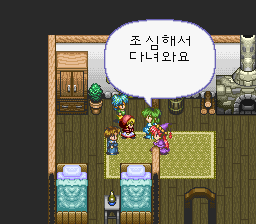
다음 단계를 누르면 이어서 읽을 수 있습니다. 앞서 펼친 내용은 그대로 남습니다.
도도리머가 거울을 부순 뒤 수리 부탁에 ‘해 볼게요’, 이어서 ‘네’를 고릅니다.
집에서 남쪽으로 나와 마을 동쪽 집 앞을 지나 남동쪽 돌길로 가면 개구리 집 쪽에 닿습니다.
입구의 오른쪽 이동 지점은 새가 보여도 통이 길을 막습니다. 입구 쪽으로 돌아와 분홍 계단을 오르고, 젖은 바닥을 남쪽으로 돌아 남동쪽 계단을 내려가 두 이동 지점 중 왼쪽으로 진행합니다.
이어지는 구간에서는 젖은 사각형 통로의 오른쪽·북쪽을 돌아 북동쪽 문으로 접근하고, 문 왼쪽 계단을 내려가 오른쪽 이동 지점을 사용하세요. 다섯 이동 지점이 세로로 놓인 곳에서는 맨 남쪽 지점으로 이동합니다.
길을 막는 인물의 첫 선택지로 길을 연 뒤 피자 상자를 얻을 수 있습니다. 이후 부엉이에게 음식을 받고, 다음 길막 대화에서는 두 번 모두 두 번째 선택지를 고릅니다.
부활명수 상자와 마지막 삐삐를 확인한 뒤 개굴개굴과 싸웁니다. 승리 뒤 거울 조각을 얻고 통 쪽 지름길로 돌아옵니다. 세라비에게 돌아가 쉬면 다음 화로 넘어갑니다.
늑대가 된 뚜뚜의 공격과 활 공격을 활용하세요. 체력이 줄면 회복 마법과 빙빙의 도시락으로 회복합니다.
길막 대화 뒤 피자, 부엉이 보급, 보스 전 부활명수.
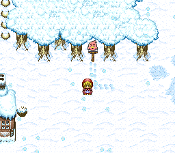
다음 단계를 누르면 이어서 읽을 수 있습니다. 앞서 펼친 내용은 그대로 남습니다.
얼어붙은 마을의 북서쪽 돌길에서 동굴로 갑니다. 동굴 안은 북쪽으로 올라가 U자 길을 돌아 동쪽 아래 출구로 빠져나오는 경로입니다.
눈 마을에서 펭귄에게 옷을 받습니다. 표지판 길에서는 위쪽 표지판을 왼쪽으로 밀어 동굴에 들어가고, 펭귄에게 ‘얼음 성에 가요’를 골라 길을 엽니다.
얼음 성의 여왕과 사자 이야기를 본 뒤 오른쪽 침실로 갑니다. 사슬에 묶인 사자를 도와주기로 하면 ‘사슬 열쇠’가 필요합니다.
침실 상자에서 사슬 열쇠와 와글와글 피자를 얻습니다. 식탁과 친구 사이에 끼이면 방향을 길게 눌러 친구를 밀어 빠져나오세요.
사자를 풀어 준 뒤 받은 리모컨으로 친구에게 ‘자유로워져라’를 선택합니다. 빙빙을 먼저 되돌리고 밖에서 저장한 다음, 뚜뚜를 되돌리면 됩니다.
친구들을 되찾은 뒤 침실을 나가면 여왕 전투가 이어집니다. 승리 후 되돌아와 세라비에게 두 번째 거울 조각을 전하고 쉽니다.
집의 피자, 동굴의 부활명수와 곱빼기밥, 침실의 사슬 열쇠와 와글와글 피자, 승리 후 눈 마을 언덕 남쪽의 기운 팍팍 박카쌩.
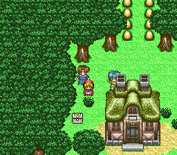
다음 단계를 누르면 이어서 읽을 수 있습니다. 앞서 펼친 내용은 그대로 남습니다.
먼저 학교 앞 가시덤불을 조사합니다. 연구소에서 처음 거절당했다면 학교를 보고 다시 돌아오세요. 설명을 듣고 연구원이 비키면 승강기로 내려갑니다.
첫 지하층 동쪽 위쪽 길의 피자 상자 두 개, 남동쪽의 왕피자 상자를 확인합니다. 동쪽 사다리 아래에서 서쪽 문으로 가면 부엉이에게 음식을 받습니다.
사다리를 막는 연구원의 케이크 부탁을 듣습니다. 세라비의 집에 돌아가 케이크 대화를 마치고 연구원에게 전하면 길이 열립니다.
다음 연구원은 마린의 분홍 머리카락을 부탁합니다. 학교의 마린에게 말을 걸어 뚜뚜가 나서는 두 번째 선택지를 진행한 뒤 연구원에게 돌아옵니다.
아래층 삐삐에 저장합니다. 북동쪽 자료실의 디스크를 조사하고 연구원과 대화를 마친 뒤, 늑대 모습을 보여 주는 장면 뒤 보스 방으로 갑니다.
프린세스로 변신한 뒤 불사조의 검으로 공격하세요. 여러 적을 상대하므로 회복 대상을 확인하고, 피자와 도시락도 남겨 두세요.
전자 레인저 일행에게 승리하면 세 번째 거울 조각과 학교의 가시덤불을 없앨 약 ‘가시싹’을 받습니다. 집으로 돌아가 세라비에게 보고하고 쉽니다.
연구소 첫 지하층의 피자 두 개와 왕피자, 부엉이 보급, 심부름과 대화를 통한 진행.
다음 단계를 누르면 이어서 읽을 수 있습니다. 앞서 펼친 내용은 그대로 남습니다.
학교 앞 보라색 머리 친구와의 선택지에서 ‘가시싹’을 고릅니다. 학교 정문에 접근해 가시덤불이 사라지면 문 중앙에서 확인해 들어갑니다.
동쪽 복도 끝의 삐삐에게 저장합니다.
교장의 차 마시는 장면과 또 다른 친구들의 등장 후 ‘싸워야겠어’를 선택하면 전투가 시작됩니다.
승리 후 집에서 마지막 거울 조각을 전하면 거울이 수리됩니다. 쉬는 선택지로 다음 화를 시작합니다.
다음 단계를 누르면 이어서 읽을 수 있습니다. 앞서 펼친 내용은 그대로 남습니다.
포폰타에서 그레이트 마더의 부탁을 듣습니다. 마을의 세 어머니 모두에게 말을 건 뒤 사자에게 돌아가면 나무 동굴 길이 열립니다.
나무 동굴의 피자 상자 두 개를 지나 다람쥐 마을로 갑니다.
아는 사람이 있다는 선택에서 ‘테일’을 고르고 초록 옷의 인물을 찾아 시험을 통과하면 하트를 받습니다.
북쪽 문이 열리지 않으면 마을의 이야기를 더 들어야 합니다. 닫힌 집 앞 사람들, 베베의 아버지, 남쪽 파란 주민에게 말을 걸어 꼬리 없는 아기와 신목의 예언을 확인하세요.
이야기를 들은 뒤 북쪽 경비에게 다시 말하면 신목에 들어갈 수 있습니다. 빈 왕좌를 조사하고 나올 때 사건이 이어집니다.
테일의 집에서 가족을 설득하고 비밀 통로로 베베를 구출합니다. 구출 뒤 가족에게 돌아가 작별하고, 베베와 함께 궁전으로 갑니다.
베베를 인계한 뒤 야야 구출 부탁을 수락합니다.
야야 집에서 부모와 대화를 마친 뒤 동쪽 경비가 비켜 길이 열립니다. 동굴에 들어가 삐삐에게 저장합니다.
다섯 전투를 마치고 각각의 보상을 받습니다. 전투 순서와 아래 퍼즐의 정답 순서를 혼동하지 마세요.
연못 퍼즐의 정답 순서는 노랑 → 빨강 → 초록 → 흰색 → 보라입니다. 전투한 순서와 헷갈리지 마세요.
야야를 데리고 가족에게 돌아가 작별한 뒤 궁전으로 인도합니다. 야야를 구출했다면 조각이 초기 모습으로 보여도 퍼즐을 다시 풀 필요는 없습니다.
야야 인계 뒤 육아방의 감사 대화와 메인룸의 사막 이야기를 마칩니다. 사막으로 갈 수 없다면 아래 네 곳의 대화를 차례로 마치세요.
첫 번째 TV: 연못 북서쪽 집. ‘오지왕 탐험대’와 ‘바싹바싹 사막’ 예고 이야기를 듣습니다.
차탄의 친구: 첫 TV 집 바로 남쪽, 남서쪽 두 집 중 왼쪽 집. 오른쪽 파란 방문객에게 말을 걸면 형·동생·사촌·친구와 아기 이야기가 이어집니다.
예언: 연못 북동쪽 길의 요정 동굴, 가운데 방. 지혜·마음·힘의 아이들과 사막의 왕자에 관한 이야기를 끝까지 듣습니다. 북서쪽 TV 집 뒤 산길은 에메랄드산 쪽이므로 혼동하지 마세요.
두 번째 TV: 중앙 섬에서 동쪽 다리를 건너 남쪽으로 내려가면 나오는 외딴집. 부엌과 TV가 있는 방의 보라색 남자와 이야기합니다.
다른 단서들을 들은 뒤 두 번째 TV 대화가 끝나자 ‘우리 세계에 있는 건 아닐까’라는 일행의 추리가 자동으로 이어집니다. 빙빙에게 직접 말을 걸어 ‘사막으로 가자’는 말만 듣는 것으로는 진행되지 않으니 네 곳의 대화를 모두 마치세요. 추리를 마친 뒤 궁전 서쪽 거울로 귀환합니다.
선택 보급: 현실 세계 학교 왼쪽 맨홀의 발바닥 이동 지점에서는 ‘찌릿찌릿 망치’를 얻을 수 있습니다.
마을 남쪽 출구에서 십자 모양 연못의 서쪽으로 돌아 흰 천막의 맨홀 → 발바닥 이동 지점 → 동굴로 갑니다. 동굴에는 삐삐와 부엉이의 보급이 있습니다. 이후 북쪽의 전에는 막혀 있던 집을 통해 사막에 들어갑니다.
사막 남서쪽 파란 천막의 오지왕에게 말을 걸고 북쪽 궁전으로 갑니다. 왕좌 오른쪽 문 안 큰 침실의 북서쪽에 삐삐가 있습니다.
침실 뒤 왼쪽 문은 코코의 방, 오른쪽 문은 소라의 방입니다. 왕자 쪽 사람들의 이야기를 듣고 방을 나올 때 왕에게 물어보자는 대화가 이어집니다.
왕에게 부탁을 듣고 침실의 노인에게 ‘싸울 준비요’ → ‘간식 전부!’로 보급받으세요.
경비의 암호 ‘무궁화 꽃이’에는 세 번째 ‘웃었습니다’를 선택해 통과합니다. 램프를 조사해 치코트와 싸웁니다.
프린세스 메달리온, 속도 보조, 불사조의 검, 빙빙의 불꽃 공격, 늑대 뚜뚜의 공격과 음식 회복을 함께 사용하세요. 준비 단계에서 보급하고 보스 전에 저장하세요.
승리 뒤 왕에게 보고하고 소라의 방에서 인계받습니다. 소라가 떨어지지 않도록 넓게 돌아 이동하세요.
사막 남쪽 아치로 나가면 포폰타로 바로 이어집니다. 들어올 때의 동굴을 거슬러 올라갈 필요가 없습니다. 궁전에 소라를 인도합니다.
소라를 인도한 뒤 반지가 역할을 마치고 사라집니다. 궁전 거울로 집에 돌아갑니다. 세라비 오른쪽 빈 의자 쪽에서 왼쪽을 향해 말을 걸고 ‘네, 쉴래요…’를 고르면 다음 화로 넘어갑니다.
요정 동굴 왼쪽 방의 기운 팍팍 박카쌩, 나무 동굴 피자 두 개, 테일 시험과 다섯 전투의 하트, 학교 왼쪽 맨홀 너머 찌릿찌릿 망치, 사막 궁전의 간식 보급.
다음 단계를 누르면 이어서 읽을 수 있습니다. 앞서 펼친 내용은 그대로 남습니다.
니포포의 탄생식 뒤 으뜸탑으로 갑니다. 세 마더와 탑의 사람들에게 말을 걸어 알현 장면을 진행합니다.
사건 뒤 뚜뚜가 뛰쳐나갑니다. 밖의 그레이트 마더와 동쪽 물가에서 상황을 확인하세요.
연못 서쪽 다리를 건너 남서쪽 두 집 중 왼쪽 집으로 갑니다. 안의 파란 펭귄과 이야기하면 구출하러 떠납니다.
동쪽 물가의 펭귄에게 다시 말을 겁니다. 이후 빙빙이 다친 뚜뚜를 데리고 가며 차차 혼자 남습니다. 중앙 섬 삐삐에서 저장할 수 있습니다.
다시 궁전 침실로 돌아갑니다. 앞 화의 부엉이 동굴로 가는 길이 아닙니다. 친구들과의 대화 뒤 방을 나서면 왕자와의 전투가 이어집니다.
늑대 뚜뚜의 공격, 공격력·속도 보조, 찌릿찌릿 망치를 활용하세요. 전체 회복과 뚜뚜의 곱빼기밥도 준비해 두면 좋습니다.
승리 후 바깥의 여왕과 이야기하고 아래 장소들을 점검할 수 있습니다.
포폰타 북동쪽 길의 수정 동굴 가운데 문 안 상자: 하트 획득.
현실 세계 귀환 뒤 마을 사람들의 선물과 도시락 상자.
학교 북동쪽 맨홀 → 발바닥 이동 지점 → 숲의 상자: 하트 획득.
학교 친구 세 명에게 받은 선물.
보스전에 들어가기 전에 하트와 회복품을 챙겨 두세요.
현실 마을 개구리 지역 남쪽 맨홀로 내려가 사다리 두 개를 지나 아래 오른쪽 발바닥 이동 지점을 사용하면 강 가운데 성에 닿습니다.
성 입구 북쪽 삐삐에게 저장하고 왼쪽 길의 은빛 인물에게 갑니다. 사건 뒤 궁전으로 이동합니다.
동쪽 문 쪽을 확인하고 마지막 탑으로 향합니다. 마지막 전투 전 홀리에게 하트를 받을 수 있습니다.
궁전 북서쪽 삐삐에게 저장해 최종전에 대비하세요.
승리 뒤 되살아난 사람들을 만나고 여왕의 마지막 거울 안내를 확인합니다. 마지막 탑의 니포포도 만날 수 있습니다. 작별을 마치고 현실로 돌아오면 거울의 발바닥이 사라집니다. 마을 삐삐에게 저장한 뒤 세라비에게 말을 걸어 ‘그만할래요’를 선택하면 엔딩이 이어집니다. 막이 닫힌 마지막 무대에서 Start로 타이틀에 돌아갈 수 있습니다.
수정 동굴·학교 북동쪽 맨홀 너머·홀리에게서 얻는 하트, 귀환 뒤 마을·학교의 선물과 도시락.
회복이 필요할 때, 효과가 궁금할 때 바로 찾아보세요.
표의 회복량은 전투 중 효과입니다. 회복은 최대 HP·MP를 넘지 않습니다. 차차의 아이템 효과는 프린세스, 뚜뚜의 아이템 효과는 늑대 변신 중에도 같아요.
효과 색인을 누르면 종류 필터를 풀고 관련 아이템과 기술을 함께 보여줍니다.
총 49개 항목
조건에 맞는 항목이 없습니다. 검색어를 줄이거나 전체 보기를 눌러 주세요.
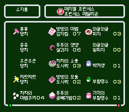
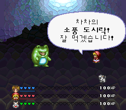
| 이름 / 종류 | 효과 | 대상 | 회복량 | 소비 MP | 조건 · 주의 |
|---|---|---|---|---|---|
뿅뿅 망치공격 도구 | 공격력에 4를 더한 값으로 피해 계산을 시작해요. 한 번 쓰고 없어지지 않아요. | 적 | HP 0 MP 0 | 0 | 공격 계산에 쓰는 보정값이며 고정 피해량이 아니에요. 방어력·명중·난수에 따라 실제 피해가 달라져요. |
꽁꽁 망치공격 도구 | 공격력에 9를 더한 값으로 피해 계산을 시작해요. 한 번 쓰고 없어지지 않아요. | 적 | HP 0 MP 0 | 0 | 공격 계산에 쓰는 보정값이며 고정 피해량이 아니에요. 방어력·명중·난수에 따라 실제 피해가 달라져요. |
후끈후끈 망치공격 도구 | 공격력에 17을 더한 값으로 피해 계산을 시작해요. 한 번 쓰고 없어지지 않아요. | 적 | HP 0 MP 0 | 0 | 공격 계산에 쓰는 보정값이며 고정 피해량이 아니에요. 방어력·명중·난수에 따라 실제 피해가 달라져요. |
찌릿찌릿 망치공격 도구 | 공격력에 23을 더한 값으로 피해 계산을 시작해요. 한 번 쓰고 없어지지 않아요. | 적 | HP 0 MP 0 | 0 | 공격 계산에 쓰는 보정값이며 고정 피해량이 아니에요. 방어력·명중·난수에 따라 실제 피해가 달라져요. |
차차의 마법 쿠키MP 회복 | 차차에게는 MP를 전부, 빙빙에게는 40 회복해요. 뚜뚜에게는 효과가 없어요. | 동료 1명 | 차차·프린세스HP 0 MP 최대치까지 빙빙HP 0 MP 40 뚜뚜·늑대HP 0 MP 0 | 0 | 회복은 최대 HP·MP를 넘지 않아요. 전투 중 효과입니다. |
빙빙의 마법 감자칩MP 회복 | 빙빙에게는 MP를 전부, 차차에게는 40 회복해요. 뚜뚜에게는 효과가 없어요. | 동료 1명 | 차차·프린세스HP 0 MP 40 빙빙HP 0 MP 최대치까지 뚜뚜·늑대HP 0 MP 0 | 0 | 회복은 최대 HP·MP를 넘지 않아요. 전투 중 효과입니다. |
뚜뚜의 쌩쌩 쌀과자HP 회복 | 뚜뚜의 HP를 250, 차차·빙빙의 HP를 40 회복해요. | 동료 1명 | 차차·프린세스HP 40 MP 0 빙빙HP 40 MP 0 뚜뚜·늑대HP 250 MP 0 | 0 | 회복은 최대 HP·MP를 넘지 않아요. 전투 중 효과입니다. |
차차의 소풍 도시락HP·MP 회복 | 차차는 HP 전부·MP 100, 빙빙은 HP 125·MP 40, 뚜뚜는 HP 125를 회복해요. | 동료 1명 | 차차·프린세스HP 최대치까지 MP 100 빙빙HP 125 MP 40 뚜뚜·늑대HP 125 MP 0 | 0 | 회복은 최대 HP·MP를 넘지 않아요. 전투 중 효과입니다. |
빙빙의 모둠 도시락HP·MP 회복 | 빙빙은 HP 전부·MP 100, 차차는 HP 125·MP 40, 뚜뚜는 HP 100을 회복해요. | 동료 1명 | 차차·프린세스HP 125 MP 40 빙빙HP 최대치까지 MP 100 뚜뚜·늑대HP 100 MP 0 | 0 | 회복은 최대 HP·MP를 넘지 않아요. 전투 중 효과입니다. |
뚜뚜의 곱빼기밥HP 회복 | 뚜뚜의 HP를 전부, 차차·빙빙의 HP를 125 회복해요. | 동료 1명 | 차차·프린세스HP 125 MP 0 빙빙HP 125 MP 0 뚜뚜·늑대HP 최대치까지 MP 0 | 0 | 회복은 최대 HP·MP를 넘지 않아요. 전투 중 효과입니다. |
와글와글 피자HP 회복 | 일행의 HP를 각각 125 회복해요. | 일행 | HP 125 MP 0 | 0 | 회복은 최대 HP·MP를 넘지 않아요. 전투 중 효과입니다. |
와글와글 왕피자HP 회복 | 일행의 HP를 각각 최대치까지 회복해요. | 일행 | HP 최대치까지 MP 0 | 0 | 회복은 최대 HP·MP를 넘지 않아요. 전투 중 효과입니다. |
박카쌩HP·MP 회복 | 선택한 동료의 HP와 MP를 모두 최대치까지 회복해요. | 동료 1명 | HP 최대치까지 MP 최대치까지 | 0 | 회복은 최대 HP·MP를 넘지 않아요. 전투 중 효과입니다. |
부활명수부활 | 쓰러진 동료를 HP 75로 되살려요. MP는 회복하지 않아요. | 쓰러진 동료 1명 | HP 75 MP 0 | 0 | 부활 시 HP는 최대치를 넘지 않아요. 능력 변화도 초기화돼요. |
기적의 부활명수부활 | 쓰러진 동료를 최대 HP로 되살려요. MP는 회복하지 않아요. | 쓰러진 동료 1명 | HP 최대치까지 MP 0 | 0 | 부활 시 HP는 최대치를 넘지 않아요. 능력 변화도 초기화돼요. |
프린세스 메달리온변신 | 차차를 프린세스로 변신시켜요. 사용해도 소모되지 않아요. | 차차 | — | 0 | 변신 중에는 차차로 돌아오는 항목으로 바뀌어요. |
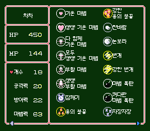
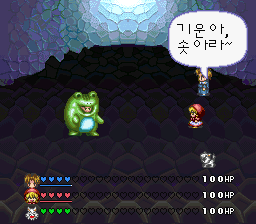
| 이름 / 종류 | 효과 | 대상 | 회복량 | 소비 MP | 조건 · 주의 |
|---|---|---|---|---|---|
기운 마법HP 회복 · 차차·빙빙 | HP를 75 회복해요. | 동료 1명 | HP 75 MP 0 | 1 | 최대 HP를 넘지 않아요. MP를 회복하는 기술은 아니에요. |
쌩쌩 기운 마법HP 회복 · 차차 | HP를 최대치까지 회복해요. | 동료 1명 | HP 최대 HP까지 MP 0 | 7 | 최대 HP를 넘지 않아요. MP를 회복하는 기술은 아니에요. |
다 함께 기운 마법HP 회복 · 차차 | 일행의 HP를 각각 75 회복해요. | 일행 | HP 75 MP 0 | 3 | 최대 HP를 넘지 않아요. MP를 회복하는 기술은 아니에요. |
모두 쌩쌩 기운 마법HP 회복 · 차차 | 일행의 HP를 각각 최대치까지 회복해요. | 일행 | HP 최대 HP까지 MP 0 | 21 | 최대 HP를 넘지 않아요. MP를 회복하는 기술은 아니에요. |
부활 마법부활 · 차차·빙빙 | 쓰러진 동료를 HP 75로 되살려요. 최대 HP가 75보다 작으면 최대치까지만 회복해요. | 쓰러진 동료 1명 | HP 75 MP 0 | 10 | 부활 시 능력 변화도 초기화돼요. MP는 회복하지 않아요. |
쌩쌩 부활 마법부활 · 차차 | 쓰러진 동료를 최대 HP로 되살려요. | 쓰러진 동료 1명 | HP 최대 HP까지 MP 0 | 17 | 부활 시 능력 변화도 초기화돼요. MP는 회복하지 않아요. |
잠깨미상태 회복 · 차차 | 잠든 일행을 깨워요. | 일행 | HP 0 MP 0 | 2 | 회복량은 없으며 잠든 상태를 해제해요. |
용의 불꽃공격 마법 · 차차 | 적 전체를 공격해요. | 적 전체 | — | 5 | 실제 피해는 적의 방어와 전투 조건에 따라 달라져요. |
강한 용의 불꽃공격 마법 · 차차 | 적 전체를 공격해요. | 적 전체 | — | 13 | 실제 피해는 적의 방어와 전투 조건에 따라 달라져요. |
찬바람공격 마법 · 차차 | 적 전체를 공격해요. | 적 전체 | — | 5 | 실제 피해는 적의 방어와 전투 조건에 따라 달라져요. |
눈보라공격 마법 · 차차 | 적 전체를 공격해요. | 적 전체 | — | 13 | 실제 피해는 적의 방어와 전투 조건에 따라 달라져요. |
번개공격 마법 · 차차 | 적 전체를 공격해요. | 적 전체 | — | 5 | 실제 피해는 적의 방어와 전투 조건에 따라 달라져요. |
강한 번개공격 마법 · 차차 | 적 전체를 공격해요. | 적 전체 | — | 13 | 실제 피해는 적의 방어와 전투 조건에 따라 달라져요. |
마법 폭탄공격 마법 · 차차 | 적 전체를 공격해요. | 적 전체 | — | 5 | 실제 피해는 적의 방어와 전투 조건에 따라 달라져요. |
커다란 마법 폭탄공격 마법 · 차차 | 적 전체를 공격해요. | 적 전체 | — | 13 | 실제 피해는 적의 방어와 전투 조건에 따라 달라져요. |
불꽃공격 마법 · 빙빙 | 적 1명을 공격해요. | 적 1명 | — | 3 | 실제 피해는 적의 방어와 전투 조건에 따라 달라져요. |
커다란 불꽃공격 마법 · 빙빙 | 적 1명을 공격해요. | 적 1명 | — | 8 | 실제 피해는 적의 방어와 전투 조건에 따라 달라져요. |
얼음공격 마법 · 빙빙 | 적 1명을 공격해요. | 적 1명 | — | 3 | 실제 피해는 적의 방어와 전투 조건에 따라 달라져요. |
커다란 얼음공격 마법 · 빙빙 | 적 1명을 공격해요. | 적 1명 | — | 8 | 실제 피해는 적의 방어와 전투 조건에 따라 달라져요. |
전격공격 마법 · 빙빙 | 적 1명을 공격해요. | 적 1명 | — | 3 | 실제 피해는 적의 방어와 전투 조건에 따라 달라져요. |
강한 전격공격 마법 · 빙빙 | 적 1명을 공격해요. | 적 1명 | — | 8 | 실제 피해는 적의 방어와 전투 조건에 따라 달라져요. |
진공공격 마법 · 빙빙 | 적 1명을 공격해요. | 적 1명 | — | 3 | 실제 피해는 적의 방어와 전투 조건에 따라 달라져요. |
굉장한 진공공격 마법 · 빙빙 | 적 1명을 공격해요. | 적 1명 | — | 8 | 실제 피해는 적의 방어와 전투 조건에 따라 달라져요. |
자장자장상태 이상 · 차차 | 적을 재우는 기술. | 적 1명 | — | 3 | — |
속도 상승능력 보조 · 빙빙 | 행동 게이지가 차는 속도가 2배가 돼요. | 동료 1명 | — | 4 | 게이지 증가량이 5에서 10으로 바뀌어요. |
공격력 상승능력 보조 · 빙빙 | 현재 공격력에 그 절반을 더해요. 소수점 아래는 빼고 더하며, 최대 99예요. | 동료 1명 | — | 4 | 효과가 걸린 동안 중복 적용되지 않아요. |
방어력 상승능력 보조 · 빙빙 | 현재 방어력이 4배가 돼요. 최대 99예요. | 동료 1명 | — | 4 | 효과가 걸린 동안 중복 적용되지 않아요. |
방패능력 보조 · 빙빙 | 마법 피해를 막는 내구 100의 방패를 만들어요. | 동료 1명 | — | 10 | 공격의 원래 피해만큼 내구가 줄고 0 미만이 되면 해제돼요. 물리 공격은 막지 않아요. 내구를 초과한 해당 공격도 전부 막아요. |
반짝반짝 방패능력 보조 · 빙빙 | 마법 피해를 막고, 원래 피해의 절반을 공격자에게 돌려줘요. 소수점 아래는 빼고 계산해요. 내구는 100이에요. | 동료 1명 | — | 20 | 공격의 원래 피해만큼 내구가 줄고 0 미만이 되면 해제돼요. 물리 공격은 막지 않아요. 내구를 초과한 해당 공격도 전부 막아요. |
원래대로 돌아가기능력 보조 · 빙빙 | 적 1명의 속도·공격력·방어력 변화를 해제하고 기본 능력으로 돌려요. | 적 1명 | — | 4 | 수면·기절·방패는 해제하지 않아요. |
정의의 화살변신 전용 · 프린세스 | 적 1명을 공격하는 프린세스 전용 기술이에요. | 적 1명 | — | 5 | — |
불사조의 검변신 전용 · 프린세스 | 적 전체를 공격하는 프린세스 전용 기술이에요. | 적 전체 | — | 13 | — |
버드실드변신 전용 · 프린세스 | 마법과 일반 공격의 피해를 모두 막는 내구 100의 방패를 만들어요. | 동료 1명 | — | 10 | 공격의 원래 피해만큼 내구가 줄고 0 미만이 되면 해제돼요. 내구를 초과한 해당 공격도 전부 막아요. |
회복량은 최대 HP·MP를 넘지 않으며, 0은 해당 회복 효과가 없다는 뜻입니다.
공식 공략이 아닙니다. 게임과 캐릭터의 권리는 각 권리자에게 있습니다.